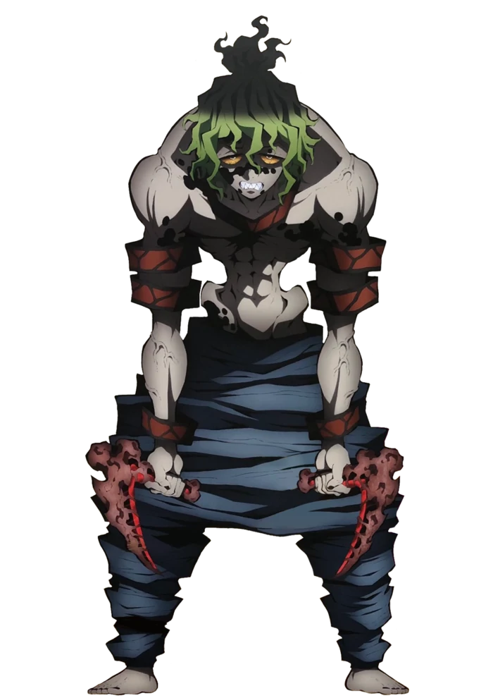

Gyutaro
Kanji
妓夫太郎
Rōmaji
Gyūtarō
Characteristics
Race
Demon
Human (Formerly)
Gender
Male
Age
>13 (Human)
>126 (Chronologically)
Affiliation
Affiliation
Twelve Kizuki
Base of Operations
Yoshiwara, Tokyo
Kyogoku House
Debuts
Anime Debut
Episode 40
Manga Debut
Chapter 85
Portrayal
Japanese VA
Ryōta Ōsaka
English VA
Brandon McInnis
Gyutaro (妓夫太郎 Gyūtarō) was one of the primary antagonists in the Entertainment District Arcof Demon Slayer: Kimetsu no Yaiba. He was a demon affiliated with the Twelve Kizuki, holding the position of Upper Rank Six, a position he shares with his younger sister, Daki.
Over a century ago, Gyutaro was a human child who worked as a debt collector in the Rashomon Riverbank of Yoshiwara, the lowest class in the Entertainment District, before he and Daki were turned into demons personally by Doma, who was Upper Rank Six at the time.
Appearance
Gyutaro was a tall man of a fairly muscular build, with a black-dotted, pale grayish complexion. His anatomy was quite strange in that his upper torso, arms and legs were all extremely muscular, whereas his waist was incredibly skinny, his pelvis jutting out at an unnatural angle. He possessed thin, green and red eyes, their sclera bright orange, that were slanted drastically downwards at the sides, the kanji for "Upper Rank" carved across them. He has unruly black hair that cut sharply off to a brighter green around the crown of his head, worn messily styled with uneven bangs and several ahoges. His body and face have noticeable ink-like markings in the form of black spots on his body and a flowing water-like pattern on his face. Gyutaro has been described to look very ugly.
Gyutaro wore no shirt, only sporting a pair of baggy blue pants and seven pieces of pattern red cloth to decorate his body, one large one around his neck and three smaller ones around each arm.
As a human, Gyutaro had similar facial features as he did as a demon, notably the ink-like patterns on his face. He also possessed the same strange contorted anatomy and hair that he had when he turned into a demon. His eyes were notably bloodshot and were a pale blue color, with visible veins lining his sclera, and he had missing and uneven teeth which seemed to grow back into sharper ones. He was seen wearing a dirty, tattered kimono when he was a child, but after Ume was born and he started working for a brothel as her collector, his clothes changed to a short-sleeved wide-striped kimono with a notably cleaner and firmer fabric. One prominent fact was that he remained barefoot in both his lives as a human and a demon.
Personality
Gyutaro showed himself to be cruel, ruthless, petty, and envious of anyone blessed with a better life than him, owing to a life of near-constant poverty and the harsh tragedies he experienced as a human. He developed a habit of sarcastically complimenting a person's best traits and then trying to vindictively kill them afterwards, as he did to the samurai who attempted to kill him and Tengen Uzui. Because of these hardships he faced as a human, Gyutaro eventually attained a personal belief that to take from those who have a better life than he had as a human was justified. A habit he seems to have is the penchant to inflict harm to himself whenever he's angry, frustrated or jealous, as seen when he scratched himself hard enough to tear deep wounds into his own flesh when he grew jealous of Tengen. He also appeared to possess a high pain tolerance, never once showing any signs of pain from his self-inflicted wounds.
Having lived over a hundred years and battled many Demon Slayers and Hashira, Gyutaro has become arrogant and prideful in combat, developing the habit of underestimating his opponents and looking down on them as beneath him, as he did with the team of Demon Slayers dispatched to kill him by having his sister fight and deal with them first rather than himself. He has also shown himself to be intensely sadistic, revelling in the defeat of the Demon Slayers by horrifically injuring them and tormenting the helpless Tanjiro for his own enjoyment.
Despite his negative traits, Gyutaro does possess a genuine, strong love for his younger sister, Daki. Having raised her himself due to his mother's mental instability, this familial love is so strong that, despite becoming a demon and nearly forgetting his life as a human, he still retains a considerable attachment to her. Due to this, he occasionally spoils and allows her to do whatever she pleases, even if her actions go against his best interests. However, his love for her does not stop him from screaming and insulting her out of frustration. When he first exposed himself, he tenderly attended to his sister's cries and injuries, both praising her efforts while insulting her lack of intellgence.
Upon his death and final thoughts, Gyutaro showed himself to possess no regrets in the choices he made throughout his life—especially his choice of willingly becoming a demon and his subsequent actions of killing and eating hundreds of people for hundreds of years—showing how misanthropic and bitter he had become due to his terrible and harsh circumstances as a human. However, he later recognizes that his only true regret he holds in his life was his sister, Ume, showing that deep down, Gyutaro regretted that his negative influence through how he raised her was the cause for her growth into a selfish person. During his final moments, Gyutaro wonders if she could have experienced many other wonderful things and lived many different lives without having to walk on the path of becoming a demon if he wasn't in her life. He genuinely wishes that she was born and raised by someone other than himself, completely shouldering the blame for all of her deplorable actions and showing just how much he loves her.
Later, even in death, Gyutaro was shown to have Ume's best interests at heart by telling her to go to the opposite direction where the light was better, showing that he wished Daki would have a fresh start to a new life without him being a bad influence on her.
Abilities

Overall Abilities: As the true Upper Rank Six, Gyutaro was an extremely powerful demon with over a century worth of combat experience under his belt, having killed 15 Hashira in the past, the strongest and most skilled Demon Slayers in the Demon Slayer Corps. His immense skills and abilities were evident as he possessed the means to easily combat both Tengen Uzui, the Sound Hashira of the Demon Slayer Corps, and Tanjiro Kamado, a talented Demon Slayer who has fought Lower Rank demons in the past, eventually overwhelming them in battle. Even when the battle turned in the favor of the Demon Slayers, Gyutaro and Daki quickly managed to take control of the situation and overwhelm them.
Another testament to his power was the fact that despite being killed in battle, Gyutaro was still capable of severely injuring and maiming Tengen, Tanjiro and Inosuke and would have likely killed them if not for Nezuko's own unique Blood Demon Art and if not for his own arrogance getting the better of him, he would have likely won and killed them all himself, as Muzan Kibutsuji later stated. Even as a child with no combat training, Gyutaro managed to defeat an adult swordsman by himself.
Core Detachment: Gyutaro possess the ability to completely detach his "core" from his own body, with it seemingly taking the form of his right eye that he then implants into his sister Daki's forehead, that then enhances and strengthens all of his sister's abilities and powers. Through this, Gyutaro also then develops a psychic connection with her and allow him to see, hear and sense everything she does and even possess and take control of her body in order to better coordinate their attacks.
Flesh Manipulation: Like all demons, Gyutaro possesses the ability to manipulate his own flesh to a certain extent. He mainly uses this ability to shape his flesh into an extremely sharp Kama which he can control telekinetically. This was also evident as Gyutaro could merge his body with Daki's and later managed to encroach and infect the swords of Tengen and Tanjiro with his flesh Kama in order to prevent them from pulling out their blades, effectively keeping them in place. He also displayed the ability to twist his neck backwards.
Immense Durability: Gyutaro possesses an incredibly durable body. This was shown when Tengen and Tanjiro both used their Nichirin Swords to attack Gyutaro's Kama made from his own flesh but to no avail as they couldn't even slice through it. When Tanjiro landed a surprise attack on Gyutaro's neck, his blade failed to make a dent in the Upper Rank's body. Tanjiro only managed to lob off Gyutaro's head when he "summoned a hundred times" the strength in his body,which awakened his Demon Slayer Mark in the process, to successfully cut through his neck.
Immense Regeneration: As a member of the Upper Ranks, Gyutaro's regenerative powers are extremely potent. With his immense recovery speed, he could instantly heal the scratches he inflicted upon himself in a matter of seconds. More impressively, he could regenerate from the damages dealt to him by Tengen's explosive beads that possess enough explosive force to harm the bodies of Upper Rank demons. Even when he was hit with kunai that was coated with wisteria extract that could paralyze an ordinary demon for half a day and seal the movements of Lower Rank demons, Gyutaro still managed to regenerate instantly.
Immense Speed & Reflexes: As an Upper Rank demon, Gyutaro has assimilated an extremely high concentration of Muzan Kibutsuji's blood which have greatly enhanced his own speed and reflexes to levels that can out-match the Hashira. As seen with most demons, Gyutaro can also use bursts of speed so fast he appears to teleport. He could also keep up with the blistering movements Tengen, the Hashira with the fastest running speed out of all his peers, sometimes moving fast enough to evade his reflexes and land hits on him before he can even react. Gyutaro was also fast enough to block a barrage of fast kunai.
Immense Strength: Gyutaro possesses superhuman physical strength, being able to clash with Tengen's own immense arm strength while fighting. He was also able to break two of Tanjiro's fingers without much effort, send him flying into a building at high speeds, and cause Tanjiro to cough up blood with a single kick to the stomach. Gyutaro was also able to send Tengen flying back a great distance with another kick.
Poison Generation: Gyutaro possesses the ability to generate extremely lethal poison, which he uses to coat his blood sickles. The poison was strong enough that it would almost instantly kill someone inflicted with it, and those who don't will be severely weakened and might be rendered unable to fight. Even Tengen who has developed a high tolerance to poison from his shinobi training was greatly weakened by Gyutaro's poison to the point he had to forcefully stop his heart to prevent it from spreading even further. The poison had much worse effects on Tanjiro and Inosuke, despite the latter having some form of natural poison resistance. Tanjiro was almost immediately incapacitated when he was inflicted by Gyutaro's poison while Inosuke was left in a near-death state after a while.
Tactical Intellect: Gyutaro displays incredible tactical foresight and intelligence. He was able to use the information he gathered from Daki to coordinate their attacks against his opponents. Gyutaro was also able to use his Blood Demon Art tactically to create inescapable attacks. After seeing Hinatsuru fire a barrage of kunai, Gyutaro correctly surmised that mounting an attack that would normally be easily mitigated by his regeneration had an underlying motive and chose to deflect the attack rather than taking it head on. He was also shown to use his flesh manipulation ability in creative ways, such as trapping Tengen's and Tanjiro's blade in his flesh Kama to keep them from moving. Lastly, Gyutaro figured out Tanjiro's strategy which was to disguise the scent of the wisteria-laced kunai with a prostitute's incense bag in order to land a surprise attack on him.
Unlimited Stamina & Endurance: Like all demons, Gyutaro possesses an infinite amount of stamina and endurance. He was able to engage in combat with Tengen, a Hashira, and Tanjiro for the entire duration of the battle without showing any signs of fatigue or exertion. Gyutaro also showed immense resilience to pain when he constantly scratched himself, twisted his own neck backwards to block Tengen's sword attack, had both his legs sliced off, and when Tanjiro headbutted him. Even before becoming a demon, Gyutaro was able to get slashed in the back by a katana and didn't flinch nor show any signs of pain.
Fighting Style
Kama Proficiency: Gyutaro has displayed mastery in dual wielding his flesh Kama in combat. As an Upper Rank demon, he has lived for over a century and has refined his skill to the point he can surpass the Hashira, the strongest swordsmen in the Demon Slayer Corps, in close ranged combat. Even before he became a demon, Gyutaro has shown to be apt in utilizing his Kama for violence, easily killing a woman and later slicing an adult swordsman's head in two with them when he was enraged. With his demon abilities, he can even control and move his flesh Kama telekinetically, which Gyutaro used to make them fly back to him like a boomerang.[16] As noted by Tengen and Inosuke, Gyutaro's fighting style was comparable to that of a mantis. Gyutaro's combat style seems to revolve around aiming to piercing his opponent's neck with the tip of his Kama.
Blood Demon Art
Blood Manipulation: Gyutaro's Blood Demon Art allows him to manipulate his own body's blood in various ways. He was shown to generate them from his flesh Kama or from open wounds on his body or release blood at will from his veins. It was implied that Gyutaro doesn't run out of blood due to his regenerative abilities, giving him a virtually infinite source of blood to fuel his techniques. In combat, he usually creates barrages of solidified sickle-shaped blood as sharp as blades that can travel at immensely fast speeds to attack his opponents. Gyutaro was capable of freely manipulating these blood slashes at will, altering their movements until they hit his opponent or shaping them however he pleases. Furthermore, his blood sickles are coated in deadly poison.
Gyutaro can use his Blood Demon Art tactically to create inescapable attacks that can overwhelm the likes of Tengen and hold off the combined efforts of Tanjiro, Zenitsu, and Inosuke. Moreover, Gyutaro's blood slashes appear to be extremely deadly as Inosuke noted that a single scratch from them would be enough to kill him. The blood he manipulates was shown to be quite durable as well since Tanjiro deduced that his sword would shatter if he took the technique head on without deflecting it. Furthermore, Gyutaro can create a shield of blood in the form of a dome, which he used to protect himself from a barrage of kunai, further exemplifying its immense durability. More impressively, Gyutaro can create long-ranged circular torrents of razor sharp blood that can decimate the surroundings with ease.[
Flying Blood Sickles- Gyutaro releases multiple sharp and durable sickle-shaped blades of solidified blood by swinging his Kama.
Rampant Arc Rampage- Gyutaro releases multiple sharp and durable sickle-shaped blades of solidified blood by swinging his Kama.
Rotating Circular Slashes: Flying Blood Sickles- Gyutaro unleashes circular waves of sharp solidified blood from his body. This technique has massive range and he is even able to activate it as his head is being cut off.
Equipment
Flesh Kama: Gyutaro carries around a pair of Kama fashioned from his own flesh and blood. They serve as his main tools in combat and are extremely durable and sharp, being able to tear through flesh and block attacks from Nichirin Swords with ease. They have a fleshy exterior and are blood red in color. Gyutaro briefly displayed the ability to move his Kama telekinetically, making it fly back towards him as if it were a boomerang. When he was a child, Gyutaro possessed a similar pair of Kama which someone left behind and was most likely his main source of inspiration for using a pair of Kama as a demon.